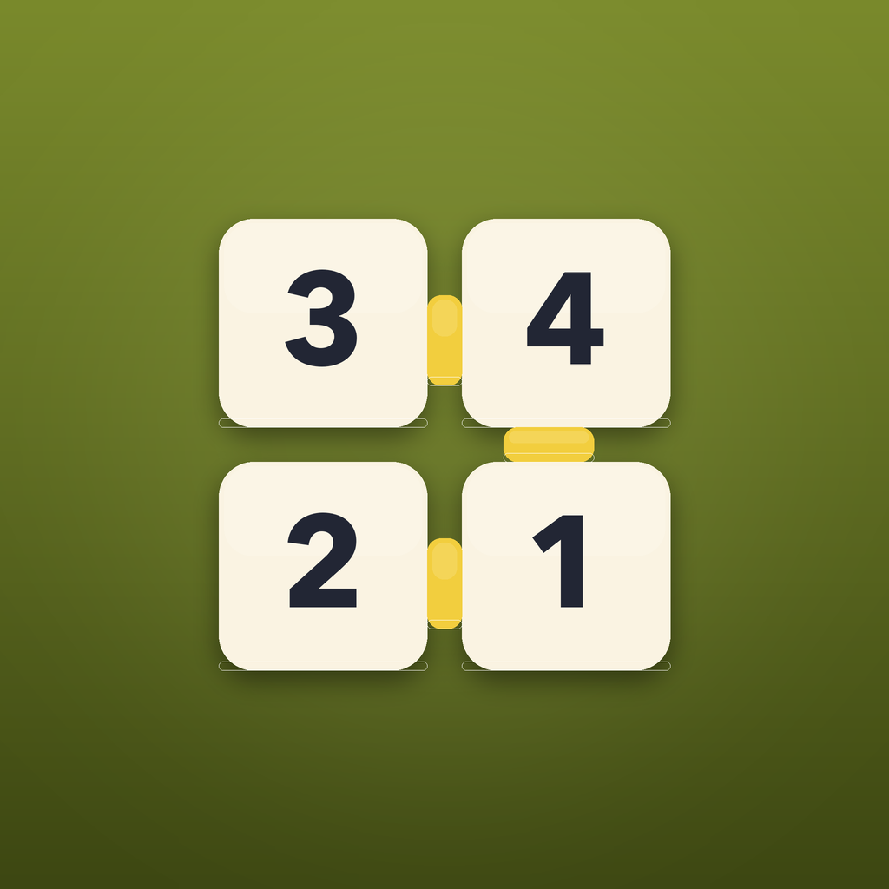

Support
Renzoku Meadow
Fill a 4×4 grid with 1 to 4 so each digit appears once in every row and column. A marked edge between two squares means their digits are consecutive, and an unmarked edge means they are not.
Select a square and enter a digit from 1 to 4. Arrows inside the squares point out the marked edges to the right and below.
Six original boards, each unlocking the next once solved. Undo and Restart are always available, there is no timer, and your progress saves on this device. Plays offline. No ads, no account, no data collection.
Get help
Email hi@mosselora.com with your device model and what happened. We read every message.
Your progress
Progress is saved on your device only. Deleting the app removes it; there is no cloud backup.